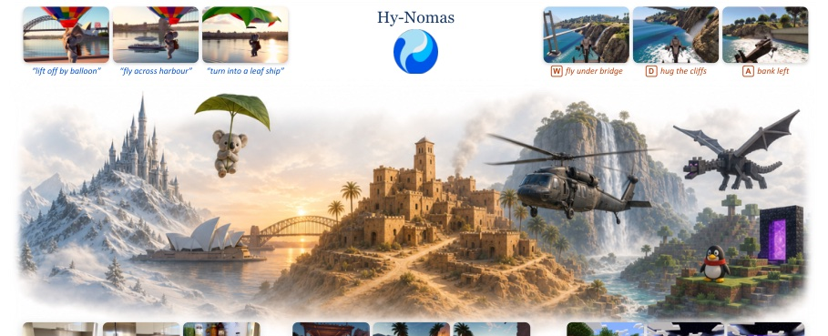

Hy-Nomas: Towards Free-form Interactive World Generation
Core Contributor
Hy-Nomas is Tencent Hunyuan’s open-source, free-form interactive video world model. It generates a world segment by segment with an 8B autoregressive diffusion transformer, letting users keep steering it with multi-turn text prompts and camera trajectories, while a persistent KV cache serves as world memory. It outputs 720×1280 video at 24 FPS and is released under Apache 2.0.
VAE training frameworkTeam’s image/video VAE training codebase for high-res long videos
Built the team’s image/video VAE training codebase: (i) distributed training that shards both model parameters and activations across GPUs, enabling multi-scale, image-video joint training on high-resolution long videos; (ii) mainstream VAE architectures with standard training objectives, including perceptual, GAN and semantic losses; (iii) standardized reconstruction benchmarks and training-health monitoring; and (iv) billion-parameter DiT pre-training for latent-space validation.
Billion-scale data curationPre-training data pipeline on a hundred-GPU cluster
Built an image/video pre-training data curation pipeline on a hundred-GPU cluster, covering large-scale embedding extraction, hierarchical clustering, deduplication, category rebalancing and safety filtering.
One-step pixel diffusion decoder~7B pixel-space video DiT decoder, distilled to one step
Building on the framework and data above, trained a ~7B pixel-space video DiT as the VAE decoder to recover high-frequency details lost in latent compression; distilled it into a one-step sampler and enabled streaming decoding for world-model generation. Integrated into the final mainline release.